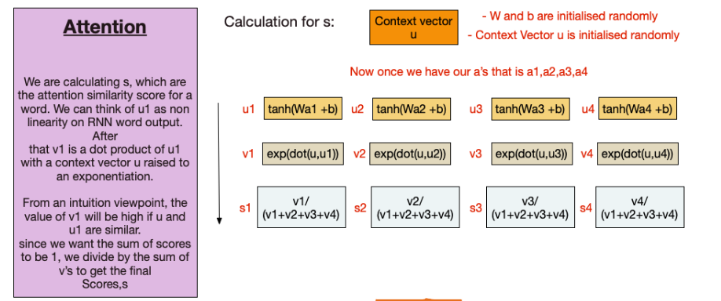

GRU + Attention (with normalization)
Contents
GRU + Attention (with normalization)¶
Overview¶
This notebook extends the GRU Classifier model (movie watching) described in the paper by adding an Attention Layer and normalization
Attention was first presented by Dzmitry Bahdanau, et al. in their paper Neural Machine Translation by Jointly Learning to Align and Translate.
Data¶
Data provided is already preprocessed but needs to be converted in model usabale format
import torch
import pickle
import numpy as np
import torch.nn as nn
with open('HCP_movie_watching.pkl','rb') as f:
TS = pickle.load(f)
print(TS.keys())
dict_keys(['testretest', 'twomen', 'bridgeville', 'pockets', 'overcome', 'inception', 'socialnet', 'oceans', 'flower', 'hotel', 'garden', 'dreary', 'homealone', 'brokovich', 'starwars'])
Dataset organization¶
TS is a dictionary with movie names as keys
Value against each key is a numpy array of dimensions [#participants, #time points, #ROIs]
Note that the testretest movie appears on all 4 runs for a participant, therefore the value has dimensions [#runs, #participants, #time points, #ROIs]
rel = {}
l = 0
for movie_name, ts in TS.items():
rel[movie_name] = l
l += 1
print(movie_name, ts.shape)
testretest (4, 176, 84, 300)
twomen (176, 245, 300)
bridgeville (176, 222, 300)
pockets (176, 189, 300)
overcome (176, 65, 300)
inception (176, 227, 300)
socialnet (176, 260, 300)
oceans (176, 250, 300)
flower (176, 181, 300)
hotel (176, 186, 300)
garden (176, 205, 300)
dreary (176, 143, 300)
homealone (176, 233, 300)
brokovich (176, 231, 300)
starwars (176, 256, 300)
Padding sequences¶
To deal with varying time points. For data with time points < seq_length(self defined) , I have paded them with 0s. For data with time points > seq_length(self defined), I have split the data into 2 section first, into [ : seq_length], second into [data_time_point-seq_length : ]. I have used the seq_length = 198 (average time_point mentioned in the paper).
Final features array is a 2D array, with shape = (seq_length,300).
The following block shows above mentioned discussion
train_feature = []
test_feature = []
train_target = []
test_target = []
seq_length = 198
for movie_name, ts in TS.items():
pep = 0
if movie_name != "testretest":
for i in ts:
pep += 1
if (pep <= 100):
if i.shape[0]>seq_length:
k = i[:seq_length][:]
train_feature.append(k)
train_target.append(rel[movie_name])
k = i[i.shape[0]-seq_length:][:]
train_feature.append(k)
train_target.append(rel[movie_name])
elif i.shape[0]<seq_length:
k = [[0]*300]*seq_length
k[seq_length-i.shape[0]:] = i
train_feature.append(k)
train_target.append(rel[movie_name])
else:
train_feature.append(i)
train_target.append(rel[movie_name])
else:
if i.shape[0]>seq_length:
k = i[:seq_length][:]
test_feature.append(k)
test_target.append(rel[movie_name])
k = i[i.shape[0]-seq_length:][:]
test_feature.append(k)
test_target.append(rel[movie_name])
elif i.shape[0]<seq_length:
k = [[0]*300]*seq_length
k[seq_length-i.shape[0]:] = i
test_feature.append(k)
test_target.append(rel[movie_name])
else:
test_feature.append(i)
test_target.append(rel[movie_name])
print(pep)
else:
for jj in ts:
pep = 0
for i in jj:
pep += 1
if (pep <= 100):
if i.shape[0]>seq_length:
k = i[:seq_length][:]
train_feature.append(k)
train_target.append(rel[movie_name])
k = i[i.shape[0]-seq_length:][:]
train_feature.append(k)
train_target.append(rel[movie_name])
elif i.shape[0]<seq_length:
k = [[0]*300]*seq_length
k[seq_length-i.shape[0]:] = i
train_feature.append(k)
train_target.append(rel[movie_name])
else:
train_feature.append(i)
train_target.append(rel[movie_name])
else:
if i.shape[0]>seq_length:
k = i[:seq_length][:]
test_feature.append(k)
test_target.append(rel[movie_name])
k = i[i.shape[0]-seq_length:][:]
test_feature.append(k)
test_target.append(rel[movie_name])
elif i.shape[0]<seq_length:
k = [[0]*300]*seq_length
k[seq_length-i.shape[0]:] = i
test_feature.append(k)
test_target.append(rel[movie_name])
else:
test_feature.append(i)
test_target.append(rel[movie_name])
print(pep)
176
176
176
176
176
176
176
176
176
176
176
176
176
176
176
176
176
176
Training, Validation, Test¶
With the data in required shape, The following shows the split into training, validation, and test sets.
from torch.utils.data import TensorDataset, DataLoader
train_data = TensorDataset(torch.from_numpy(np.array(train_feature)).float(),torch.from_numpy(np.array(train_target)).float())
test_data = TensorDataset(torch.from_numpy(np.array(test_feature)).float(),torch.from_numpy(np.array(test_target)).float())
len(train_data),len(test_data)
(2700, 2052)
from torch.utils.data.sampler import SubsetRandomSampler
batch_size = 32
valid_data = 0.237
t_train = len(train_data)
data_no = list(range(t_train))
np.random.shuffle(data_no)
split_no = int(np.ceil(valid_data*t_train))
train,valid = data_no[split_no:],data_no[:split_no]
train_sampler = SubsetRandomSampler(train)
valid_sampler = SubsetRandomSampler(valid)
train_loader = DataLoader(train_data,batch_size=batch_size,sampler=train_sampler)
valid_loader = DataLoader(train_data,sampler=valid_sampler,batch_size=batch_size)
test_loader = DataLoader(test_data, batch_size=batch_size,shuffle = True)
len(valid)
640
len(train_loader),len(valid_loader),len(test_loader)
(65, 20, 65)
iter(train_loader).next()[0].shape
torch.Size([32, 198, 300])
is_cuda = torch.cuda.is_available()
if is_cuda:
device = torch.device("cuda")
else:
device = torch.device("cpu")
Models¶
Implementing the Attention Model¶
The following figures shows the idea behind it (normalization layers are not shown)
class Attention(nn.Module):
def __init__(self, hidden_dim, seq_len, bias=False, **kwargs):
super(Attention, self).__init__(**kwargs)
self.supports_masking = True
self.bias = bias
self.hidden_dim = hidden_dim
self.seq_len = seq_len
weight = torch.zeros(hidden_dim, 1)
nn.init.kaiming_uniform_(weight)
context = torch.zeros(seq_len,seq_len)
nn.init.kaiming_uniform_(context)
self.context = nn.Parameter(context)
self.weight = nn.Parameter(weight)
if bias:
self.b = nn.Parameter(torch.zeros(seq_len))
def forward(self, x,mask=None):
eij = torch.mm(x.contiguous().view(-1, self.hidden_dim ), self.weight).view(-1,self.seq_len)
if self.bias:
eij = eij + self.b
eij = torch.tanh(eij)
eij = torch.mm(eij,self.context)
eij = torch.nn.functional.normalize(eij,p=2.0,dim=0)
a = torch.exp(eij)
if mask is not None:
a = a * mask
a = a / (torch.sum(a, 1, keepdim=True) + 1e-10)
weighted_input = x * torch.unsqueeze(a, -1)
weighted_input = torch.nn.functional.normalize(weighted_input,p=2.0,dim=0)
return torch.sum(weighted_input, 1)
GRU Classifier Model as described in the paper with added normalization layers¶

class GRU_RNN(nn.Module):
def __init__(self, input_dim, output_dim,hidden_dim,n_layers,att=True,drop_prob=0.000006):
super(GRU_RNN, self).__init__()
self.output_dim = output_dim
self.n_layers = n_layers
self.hidden_dim = hidden_dim
self.att = att
self.gru = nn.GRU(input_dim,hidden_dim,num_layers=n_layers,dropout=drop_prob,batch_first=True)
self.linear = nn.Linear(hidden_dim,output_dim)
if att:
self.attention = Attention(hidden_dim, 198)
self.dropout = nn.Dropout(0.3)
self.func = nn.Softmax(dim = -1)
def forward(self, x, hidden,encoder_x=0):
x,hidden = self.gru(x,hidden)
if self.att:
x = self.attention(x)
else:
x = x[:, -1, :]
x = torch.nn.functional.normalize(x,dim=0)
x = self.dropout(x)
x = self.linear(x)
sig_out = self.func(x)
return sig_out, hidden
def init_hidden(self, batch_size):
weight = next(self.parameters()).data
hidden = weight.new(self.n_layers, batch_size, self.hidden_dim).zero_().to(device)
return hidden
Training¶
def train(epochs,train_loader,net,valid_loader,optimzer,criterion,att=True):
val_acc = []
tr_acc = []
clip = 3 # gradient clipping
net.to(device)
net.train()
valid_loss_min = np.Inf
valid_losses = []
train_losses = []
for e in range(epochs):
num_correct = 0
h = net.init_hidden(batch_size)
train_loss = []
valid_loss = []
train_acc = 0.0
valid_acc = 0.0
counter = 0
for inputs, labels in train_loader:
counter += 1
if counter == 65:
continue
inputs, labels = inputs.to(device), labels.type(torch.LongTensor).to(device)
h = h.data
net.zero_grad()
output, h = net(inputs, h)
pred = torch.round(output.squeeze())
top_value, top_index = torch.max(pred,1)
correct_tensor = top_index.eq(labels.float().view_as(top_index))
correct = np.squeeze(correct_tensor.to('cpu').numpy())
num_correct += np.sum(correct)
loss = criterion(output, labels)
loss.backward()
nn.utils.clip_grad_norm_(net.parameters(), clip)
optimizer.step()
train_loss.append(loss.item())
tr_acc.append(num_correct/((len(train_loader)-1)*batch_size))
acc = 0.0
val_h = net.init_hidden(batch_size)
val_losses = []
net.eval()
num_correct = 0
v_c = 0
for inputs, labels in valid_loader:
v_c += 1
val_h = val_h.data
inputs, labels = inputs.to(device), labels.type(torch.LongTensor).to(device)
output, val_h = net(inputs, val_h)
pred = torch.round(output.squeeze())
top_value, top_index = torch.max(pred,1)
correct_tensor = top_index.eq(labels.float().view_as(top_index))
correct = np.squeeze(correct_tensor.to('cpu').numpy())
num_correct += np.sum(correct)
val_loss = criterion(output.squeeze(),labels)
val_losses.append(val_loss.item())
if val_loss.item() <= valid_loss_min:
print('Validation loss decreased ({:.6f} --> {:.6f}). Saving model ...'.format(valid_loss_min, val_loss.item()))
best_epoch = e
if att:
torch.save(net.state_dict(), 'RNN_GRU_Att.pt')
else:
torch.save(net.state_dict(), 'RNN_GRU.pt')
valid_loss_min = val_loss.item()
net.train()
valid_losses.append(np.mean(val_losses))
train_losses.append(np.mean(train_loss))
val_acc.append(num_correct/(len(valid_loader)*batch_size))
print('Epoch: {}/{} \tTraining Loss: {:.6f} \tValidation Loss: {:.6f}'.format(e+1,epochs,np.mean(train_loss),np.mean(val_losses)))
return train_losses,valid_losses,tr_acc,val_acc,best_epoch
epochs = 55
input_dim = 300
hidden_dim = 32
output_dim = 15
n_layers = 2
lr = 0.006
Training with Attention Layer¶
model = GRU_RNN(input_dim, output_dim, hidden_dim, n_layers)
optimizer = torch.optim.Adam(model.parameters(), lr=lr)
criterion = nn.CrossEntropyLoss()
print(model)
GRU_RNN(
(gru): GRU(300, 32, num_layers=2, batch_first=True, dropout=6e-06)
(linear): Linear(in_features=32, out_features=15, bias=True)
(attention): Attention()
(dropout): Dropout(p=0.3, inplace=False)
(func): Softmax(dim=-1)
)
train_losses,valid_losses,tr_acc,val_acc,best_epoch = train(epochs,train_loader,model,valid_loader,optimizer,criterion)
Validation loss decreased (inf --> 2.460595). Saving model ...
Validation loss decreased (2.460595 --> 2.450120). Saving model ...
Epoch: 1/55 Training Loss: 2.626313 Validation Loss: 2.537326
Validation loss decreased (2.450120 --> 2.446825). Saving model ...
Validation loss decreased (2.446825 --> 2.369020). Saving model ...
Validation loss decreased (2.369020 --> 2.322623). Saving model ...
Validation loss decreased (2.322623 --> 2.311279). Saving model ...
Epoch: 2/55 Training Loss: 2.474487 Validation Loss: 2.409692
Validation loss decreased (2.311279 --> 2.242324). Saving model ...
Validation loss decreased (2.242324 --> 2.202667). Saving model ...
Validation loss decreased (2.202667 --> 2.189496). Saving model ...
Validation loss decreased (2.189496 --> 2.160033). Saving model ...
Validation loss decreased (2.160033 --> 2.137759). Saving model ...
Epoch: 3/55 Training Loss: 2.334693 Validation Loss: 2.240957
Validation loss decreased (2.137759 --> 2.025883). Saving model ...
Epoch: 4/55 Training Loss: 2.207295 Validation Loss: 2.175002
Validation loss decreased (2.025883 --> 2.016860). Saving model ...
Epoch: 5/55 Training Loss: 2.145841 Validation Loss: 2.123194
Validation loss decreased (2.016860 --> 2.001633). Saving model ...
Validation loss decreased (2.001633 --> 1.988718). Saving model ...
Epoch: 6/55 Training Loss: 2.095368 Validation Loss: 2.069669
Validation loss decreased (1.988718 --> 1.973650). Saving model ...
Validation loss decreased (1.973650 --> 1.927086). Saving model ...
Epoch: 7/55 Training Loss: 2.032515 Validation Loss: 2.029136
Validation loss decreased (1.927086 --> 1.926798). Saving model ...
Epoch: 8/55 Training Loss: 2.005796 Validation Loss: 2.010070
Validation loss decreased (1.926798 --> 1.908141). Saving model ...
Validation loss decreased (1.908141 --> 1.895407). Saving model ...
Epoch: 9/55 Training Loss: 1.990979 Validation Loss: 1.993857
Epoch: 10/55 Training Loss: 1.978685 Validation Loss: 1.983807
Validation loss decreased (1.895407 --> 1.860241). Saving model ...
Epoch: 11/55 Training Loss: 1.972388 Validation Loss: 1.983245
Epoch: 12/55 Training Loss: 1.967829 Validation Loss: 1.971650
Epoch: 13/55 Training Loss: 1.950152 Validation Loss: 1.952379
Epoch: 14/55 Training Loss: 1.936727 Validation Loss: 1.934693
Epoch: 15/55 Training Loss: 1.918329 Validation Loss: 1.934239
Epoch: 16/55 Training Loss: 1.901347 Validation Loss: 1.913661
Validation loss decreased (1.860241 --> 1.857917). Saving model ...
Epoch: 17/55 Training Loss: 1.879446 Validation Loss: 1.891985
Validation loss decreased (1.857917 --> 1.848831). Saving model ...
Validation loss decreased (1.848831 --> 1.843407). Saving model ...
Validation loss decreased (1.843407 --> 1.839880). Saving model ...
Epoch: 18/55 Training Loss: 1.852243 Validation Loss: 1.875011
Validation loss decreased (1.839880 --> 1.831507). Saving model ...
Epoch: 19/55 Training Loss: 1.840118 Validation Loss: 1.865991
Epoch: 20/55 Training Loss: 1.838081 Validation Loss: 1.882781
Validation loss decreased (1.831507 --> 1.828435). Saving model ...
Epoch: 21/55 Training Loss: 1.839311 Validation Loss: 1.866413
Validation loss decreased (1.828435 --> 1.827598). Saving model ...
Validation loss decreased (1.827598 --> 1.825725). Saving model ...
Epoch: 22/55 Training Loss: 1.831747 Validation Loss: 1.863140
Validation loss decreased (1.825725 --> 1.824893). Saving model ...
Epoch: 23/55 Training Loss: 1.827384 Validation Loss: 1.855738
Validation loss decreased (1.824893 --> 1.823144). Saving model ...
Epoch: 24/55 Training Loss: 1.824750 Validation Loss: 1.854096
Validation loss decreased (1.823144 --> 1.822124). Saving model ...
Epoch: 25/55 Training Loss: 1.824025 Validation Loss: 1.854424
Validation loss decreased (1.822124 --> 1.822054). Saving model ...
Epoch: 26/55 Training Loss: 1.823296 Validation Loss: 1.851776
Epoch: 27/55 Training Loss: 1.822038 Validation Loss: 1.853452
Validation loss decreased (1.822054 --> 1.821710). Saving model ...
Validation loss decreased (1.821710 --> 1.820994). Saving model ...
Epoch: 28/55 Training Loss: 1.821151 Validation Loss: 1.850123
Epoch: 29/55 Training Loss: 1.821059 Validation Loss: 1.850583
Validation loss decreased (1.820994 --> 1.820690). Saving model ...
Validation loss decreased (1.820690 --> 1.819190). Saving model ...
Epoch: 30/55 Training Loss: 1.820930 Validation Loss: 1.847693
Epoch: 31/55 Training Loss: 1.820386 Validation Loss: 1.847182
Epoch: 32/55 Training Loss: 1.820652 Validation Loss: 1.852044
Validation loss decreased (1.819190 --> 1.818134). Saving model ...
Epoch: 33/55 Training Loss: 1.820571 Validation Loss: 1.851036
Epoch: 34/55 Training Loss: 1.820105 Validation Loss: 1.850888
Epoch: 35/55 Training Loss: 1.819813 Validation Loss: 1.849949
Epoch: 36/55 Training Loss: 1.820245 Validation Loss: 1.848854
Epoch: 37/55 Training Loss: 1.819474 Validation Loss: 1.847305
Epoch: 38/55 Training Loss: 1.820041 Validation Loss: 1.850703
Epoch: 39/55 Training Loss: 1.820343 Validation Loss: 1.846082
Validation loss decreased (1.818134 --> 1.817978). Saving model ...
Epoch: 40/55 Training Loss: 1.820174 Validation Loss: 1.844967
Epoch: 41/55 Training Loss: 1.820215 Validation Loss: 1.851741
Epoch: 42/55 Training Loss: 1.820166 Validation Loss: 1.853149
Validation loss decreased (1.817978 --> 1.817904). Saving model ...
Epoch: 43/55 Training Loss: 1.820348 Validation Loss: 1.854758
Epoch: 44/55 Training Loss: 1.832030 Validation Loss: 1.898129
Epoch: 45/55 Training Loss: 1.881048 Validation Loss: 1.915641
Epoch: 46/55 Training Loss: 1.897483 Validation Loss: 1.914950
Epoch: 47/55 Training Loss: 1.866316 Validation Loss: 1.892137
Epoch: 48/55 Training Loss: 1.852916 Validation Loss: 1.882126
Epoch: 49/55 Training Loss: 1.845403 Validation Loss: 1.873276
Epoch: 50/55 Training Loss: 1.836491 Validation Loss: 1.869029
Epoch: 51/55 Training Loss: 1.829770 Validation Loss: 1.864313
Validation loss decreased (1.817904 --> 1.817527). Saving model ...
Epoch: 52/55 Training Loss: 1.827708 Validation Loss: 1.867004
Epoch: 53/55 Training Loss: 1.825312 Validation Loss: 1.869190
Epoch: 54/55 Training Loss: 1.825941 Validation Loss: 1.862438
Epoch: 55/55 Training Loss: 1.822005 Validation Loss: 1.861768
import matplotlib.pyplot as plt
x = [i for i in range(1,epochs+1)]
xi = [i for i in range(0,epochs+5,5)]
xi[0] = 1
f, axis = plt.subplots(2,1)
f.set_figwidth(20)
f.set_figheight(12)
plt.subplots_adjust(top=0.8, wspace=0.2,hspace=0.3)
axis[0].plot(x,train_losses)
axis[0].plot(x,valid_losses)
axis[0].axvline(best_epoch, color='black')
axis[0].set_xticks(xi)
axis[0].set_xlabel("Epochs",fontweight="bold",color = 'Black', fontsize='15', horizontalalignment='center')
axis[0].set_ylabel("Loss",fontweight="bold",color = 'Black', fontsize='15', horizontalalignment='center')
axis[0].set_title("Losses (with Attention)",fontweight='bold',color = 'Black', fontsize='15', horizontalalignment='center')
axis[0].legend(["Training Loss","Valid Loss",f"Best Epoch= {best_epoch}"])
axis[1].plot(x,tr_acc)
axis[1].plot(x,val_acc)
axis[1].set_xticks(xi)
axis[1].set_xlabel("Epochs", fontweight='bold',color = 'Black', fontsize='15', horizontalalignment='center')
axis[1].set_ylabel("Accuracy",fontweight='bold',color = 'Black', fontsize='15', horizontalalignment='center')
axis[1].set_title("Accuracies (with Attention)",fontweight='bold',color = 'Black', fontsize='15', horizontalalignment='center')
axis[1].legend(["Training Accuracy","Valid Accuracy"]);
Training without Attention Layer¶
model = GRU_RNN(input_dim, output_dim, hidden_dim, n_layers,att=False)
optimizer = torch.optim.Adam(model.parameters(), lr=lr)
criterion = nn.CrossEntropyLoss()
print(model)
GRU_RNN(
(gru): GRU(300, 32, num_layers=2, batch_first=True, dropout=6e-06)
(linear): Linear(in_features=32, out_features=15, bias=True)
(dropout): Dropout(p=0.3, inplace=False)
(func): Softmax(dim=-1)
)
train_losses_1,valid_losses_1,tr_acc_1,val_acc_1,best_epoch_1= train(epochs,train_loader,model,valid_loader,optimizer,criterion,att=False)
Validation loss decreased (inf --> 2.545301). Saving model ...
Validation loss decreased (2.545301 --> 2.533257). Saving model ...
Validation loss decreased (2.533257 --> 2.531535). Saving model ...
Validation loss decreased (2.531535 --> 2.516872). Saving model ...
Validation loss decreased (2.516872 --> 2.510700). Saving model ...
Validation loss decreased (2.510700 --> 2.493381). Saving model ...
Validation loss decreased (2.493381 --> 2.481485). Saving model ...
Epoch: 1/55 Training Loss: 2.652888 Validation Loss: 2.565683
Validation loss decreased (2.481485 --> 2.447845). Saving model ...
Validation loss decreased (2.447845 --> 2.406661). Saving model ...
Validation loss decreased (2.406661 --> 2.303786). Saving model ...
Epoch: 2/55 Training Loss: 2.499074 Validation Loss: 2.428971
Validation loss decreased (2.303786 --> 2.221249). Saving model ...
Epoch: 3/55 Training Loss: 2.354188 Validation Loss: 2.317046
Validation loss decreased (2.221249 --> 2.162966). Saving model ...
Validation loss decreased (2.162966 --> 2.146771). Saving model ...
Epoch: 4/55 Training Loss: 2.247725 Validation Loss: 2.260781
Validation loss decreased (2.146771 --> 2.113818). Saving model ...
Validation loss decreased (2.113818 --> 2.078197). Saving model ...
Epoch: 5/55 Training Loss: 2.192539 Validation Loss: 2.226911
Epoch: 6/55 Training Loss: 2.163089 Validation Loss: 2.238732
Validation loss decreased (2.078197 --> 2.023893). Saving model ...
Epoch: 7/55 Training Loss: 2.142199 Validation Loss: 2.207740
Epoch: 8/55 Training Loss: 2.113351 Validation Loss: 2.173619
Epoch: 9/55 Training Loss: 2.078088 Validation Loss: 2.169528
Validation loss decreased (2.023893 --> 2.017962). Saving model ...
Epoch: 10/55 Training Loss: 2.063180 Validation Loss: 2.153991
Epoch: 11/55 Training Loss: 2.051243 Validation Loss: 2.147537
Epoch: 12/55 Training Loss: 2.046025 Validation Loss: 2.143525
Epoch: 13/55 Training Loss: 2.047178 Validation Loss: 2.145517
Validation loss decreased (2.017962 --> 2.015853). Saving model ...
Epoch: 14/55 Training Loss: 2.039991 Validation Loss: 2.135093
Validation loss decreased (2.015853 --> 1.978165). Saving model ...
Epoch: 15/55 Training Loss: 2.029968 Validation Loss: 2.137901
Validation loss decreased (1.978165 --> 1.977687). Saving model ...
Validation loss decreased (1.977687 --> 1.963445). Saving model ...
Epoch: 16/55 Training Loss: 2.016379 Validation Loss: 2.110173
Validation loss decreased (1.963445 --> 1.952728). Saving model ...
Epoch: 17/55 Training Loss: 2.007896 Validation Loss: 2.110066
Validation loss decreased (1.952728 --> 1.914644). Saving model ...
Epoch: 18/55 Training Loss: 2.001942 Validation Loss: 2.103128
Epoch: 19/55 Training Loss: 1.989013 Validation Loss: 2.080157
Epoch: 20/55 Training Loss: 1.988248 Validation Loss: 2.097991
Epoch: 21/55 Training Loss: 1.974552 Validation Loss: 2.086381
Epoch: 22/55 Training Loss: 1.973481 Validation Loss: 2.082437
Epoch: 23/55 Training Loss: 1.969720 Validation Loss: 2.074637
Epoch: 24/55 Training Loss: 1.976949 Validation Loss: 2.094895
Epoch: 25/55 Training Loss: 1.999084 Validation Loss: 2.078541
Epoch: 26/55 Training Loss: 1.974468 Validation Loss: 2.061726
Epoch: 27/55 Training Loss: 1.965421 Validation Loss: 2.067203
Validation loss decreased (1.914644 --> 1.910154). Saving model ...
Epoch: 28/55 Training Loss: 1.963503 Validation Loss: 2.081786
Epoch: 29/55 Training Loss: 1.987710 Validation Loss: 2.095160
Epoch: 30/55 Training Loss: 1.981952 Validation Loss: 2.120537
Validation loss decreased (1.910154 --> 1.899656). Saving model ...
Epoch: 31/55 Training Loss: 1.988240 Validation Loss: 2.077070
Epoch: 32/55 Training Loss: 1.953878 Validation Loss: 2.070462
Epoch: 33/55 Training Loss: 1.964651 Validation Loss: 2.084830
Epoch: 34/55 Training Loss: 1.984905 Validation Loss: 2.091215
Epoch: 35/55 Training Loss: 1.971919 Validation Loss: 2.084209
Epoch: 36/55 Training Loss: 1.971070 Validation Loss: 2.057327
Epoch: 37/55 Training Loss: 1.955013 Validation Loss: 2.068352
Epoch: 38/55 Training Loss: 1.940363 Validation Loss: 2.047106
Epoch: 39/55 Training Loss: 1.951438 Validation Loss: 2.048303
Epoch: 40/55 Training Loss: 1.947062 Validation Loss: 2.058026
Epoch: 41/55 Training Loss: 1.944582 Validation Loss: 2.067151
Epoch: 42/55 Training Loss: 1.949983 Validation Loss: 2.072130
Epoch: 43/55 Training Loss: 1.951674 Validation Loss: 2.068213
Epoch: 44/55 Training Loss: 1.938705 Validation Loss: 2.055916
Epoch: 45/55 Training Loss: 1.955170 Validation Loss: 2.048982
Epoch: 46/55 Training Loss: 1.956112 Validation Loss: 2.067974
Epoch: 47/55 Training Loss: 1.947136 Validation Loss: 2.051667
Epoch: 48/55 Training Loss: 1.936365 Validation Loss: 2.073647
Epoch: 49/55 Training Loss: 1.937184 Validation Loss: 2.067187
Epoch: 50/55 Training Loss: 1.945901 Validation Loss: 2.057606
Validation loss decreased (1.899656 --> 1.893953). Saving model ...
Epoch: 51/55 Training Loss: 1.942983 Validation Loss: 2.068832
Epoch: 52/55 Training Loss: 1.941509 Validation Loss: 2.050035
Epoch: 53/55 Training Loss: 1.938688 Validation Loss: 2.033475
Epoch: 54/55 Training Loss: 1.934332 Validation Loss: 2.041124
Epoch: 55/55 Training Loss: 1.938455 Validation Loss: 2.048926
f, axis = plt.subplots(2,1)
f.set_figwidth(20)
f.set_figheight(12)
plt.subplots_adjust(top=0.8, wspace=0.2,hspace=0.3)
axis[0].plot(x,train_losses_1)
axis[0].plot(x,valid_losses_1)
axis[0].axvline(best_epoch, color='black')
axis[0].set_xticks(xi)
axis[0].set_xlabel("Epochs",fontweight="bold",color = 'Black', fontsize='15', horizontalalignment='center')
axis[0].set_ylabel("Loss",fontweight="bold",color = 'Black', fontsize='15', horizontalalignment='center')
axis[0].set_title("Losses (without Attention)",fontweight='bold',color = 'Black', fontsize='15', horizontalalignment='center')
axis[0].legend(["Training Loss","Valid Loss",f"Best Epoch= {best_epoch_1}"])
axis[1].plot(x,tr_acc_1)
axis[1].plot(x,val_acc_1)
axis[1].set_xticks(xi)
axis[1].set_xlabel("Epochs", fontweight='bold',color = 'Black', fontsize='15', horizontalalignment='center')
axis[1].set_ylabel("Accuracies",fontweight='bold',color = 'Black', fontsize='15', horizontalalignment='center')
axis[1].set_title("Accuracy (without Attention)",fontweight='bold',color = 'Black', fontsize='15', horizontalalignment='center')
axis[1].legend(["Training Accuracy","Valid Accuracy"]);
Testing¶
def test(test_loader,net):
v_c = 0
net.to(device)
net.eval()
num_correct = 0
valid_acc = 0
h = net.init_hidden(batch_size)
for inputs, labels in test_loader:
v_c += 1
if (v_c == 65):
continue
h = h.data
inputs, labels = inputs.to(device), labels.type(torch.LongTensor).to(device)
output, h = net(inputs, h)
pred = torch.round(output.squeeze())
top_value, top_index = torch.max(pred,1)
correct_tensor = top_index.eq(labels.float().view_as(top_index))
correct = np.squeeze(correct_tensor.to('cpu').numpy())
num_correct += np.sum(correct)
test_acc = num_correct/((len(test_loader)-1)*batch_size)
print("Test accuracy: {:.3f} %".format(test_acc*100))
Accuracy with Attention Layer¶
model = GRU_RNN(input_dim, output_dim, hidden_dim, n_layers)
model.load_state_dict(torch.load('RNN_GRU_Att.pt'))
<All keys matched successfully>
test(test_loader,model)
Test accuracy: 97.168 %
Accuracy without Attention Layer¶
model = GRU_RNN(input_dim, output_dim, hidden_dim, n_layers,att=False)
model.load_state_dict(torch.load('RNN_GRU.pt'))
<All keys matched successfully>
test(test_loader,model)
Test accuracy: 80.420 %
Conclusion¶
Adding an Attention Layer has increased the model accuracy as expected.
The model furthur can be extended/improved by using other methods such as transformers